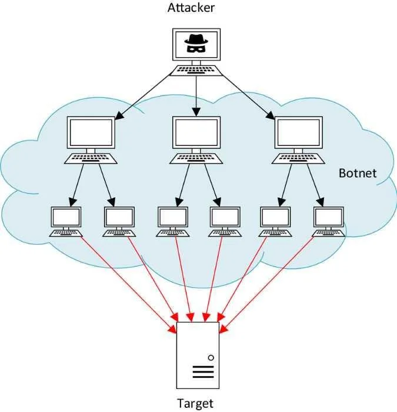
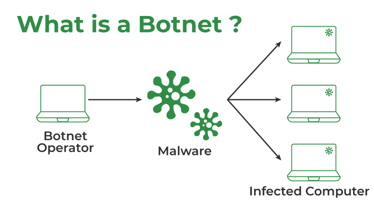
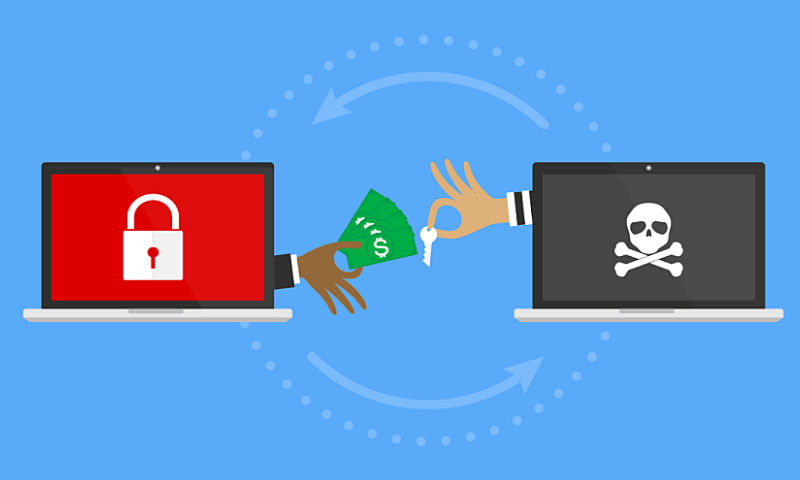
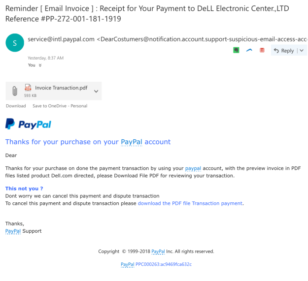

Cyber Threats
Trojans
Trojans are a type of malware named after a story from Greek mythology. They are deceptive and trick users into installing them by posing as legitimate programs.
There are various ways in which trojans can be delivered, such as through email attachments or files that appear trustworthy.
Once installed, trojans can execute tasks designed to attack devices and create a backdoor for unauthorised access. They can also allow cyber criminals to stalk people and steal their data.
Trojans are typically spread through spam emails containing malicious attachments, but they are ineffective unless they are installed locally. Once installed, they can enable hackers to remotely access your device and use it to hack into other nearby devices. They can also remain undetected by hiding themselves until activated by specific actions, such as visiting a banking website.
To protect against trojans, users should be cautious about installing software from untrusted sources and ensure that their antivirus software is up to date.
DDoS (Distributed Denial-of-Service)
When you receive and send data to servers or the internet, that is called traffic, and you can think of information like little cars on a highway leaving and going to your computer. A DDoS attack sends a massive number of requests to the server, and clogs up your traffic, like a traffic jam.
DDoS attacks work on devices connected to the internet, and the more devices there are, the more effective the attacks are because they can clog up your internet traffic easier. DDoS attacks can prevent normal internet traffic from going through.
Essentially, a DDoS attack is a malicious attempt to overload your servers with internet traffic.
Some symptoms of a DDoS attack that can be easily identified, such as when websites or the server become slower and unresponsive due to the server being overloaded with other malicious traffic.
However, real, and natural causes can cause these performance issues, so more research or troubleshooting is typically required to confirm that one is under threat from an attack. Some other identifiable factors can be suspicious amounts of traffic originating from a certain IP address, an unexplained surge in requests and odd internet traffic patterns.
Preventing these DDoS attacks are hard, as people who host the servers have to figure out what incoming traffic is from people just trying to access it, and what is malicious. As a result, there are several ways to combat these requests.
There are many tools to prevent DDoS attacks that mainly centre around limiting and controlling access to the server, and how much the server can be accessed. There are also defences and programs you can use to prevent old or unknown ports and applications sending request to the server.
Botnets
Botnets are a significant part of cybersecurity, and many types of malicious attacks attempt to create and use a botnet. But what is a botnet?
A botnet is a group of computers that have been hacked and can now be used and controlled by hackers. Each device infected with malware is considered a bot, and multiple is called a botnet.
Bots in the botnets can perform a variety of functions. They can be used for malware attacks such as Trojans and DDoS attacks. Some bots will try to take control of your device, while others might stay undetected in the background or receive instructions from an attacker.
Botnets can be controlled by receiving information and commands from a flow of information from a server or a client/server model. There are different types of servers and clients, but when used correctly, they will communicate with the bots in a botnet. Botnets can be easily destroyed once their source of information and control centres are gone, which is what people and authorities will target when trying to dismantle a botnet.
To prevent botnets, there are some actions you can take. Making sure you are up to date and have a secure password is vital because that prevents botnets from brute-forcing or finding weak points in your defences. Only allowing software and code from sources you trust and wiping your computer every once in a while, to get rid of all the unnecessary applications and malicious software that might have found its way onto your device.
Ransomware
Ransomware is a simple but incredibly dangerous form of attack that can be orchestrated against you. The basic premise of this type of malware is locking your computer encrypting your files, and demanding money in return for access back to it.
These attacks are done by hackers who wish to make money and essentially hold your device and files hostage in exchange for a ransom. One key thing to remember is never to pay a ransomware request.
There is no guarantee they will give you anything back, and they can sell your information or attack you again.
Ransomware often comes from visiting unsafe or insecure websites and opening malicious files and links. These can install ransomware and can be dangerous and a big problem.
Thankfully, there are ways to prevent getting ransomware. As mentioned earlier, never click or download things from unknown sources, and make sure you have the correct cybersecurity measures in place. Another thing you can do is back up your data frequently, so there are always other copies of it, and the only thing you end up losing is the time taken to reinstall it. If you are attacked, the best thing to do is call the authorities.
Phishing
Phishing is another common form of digital scam. Scammers impersonate trusted companies or individuals to trick you into revealing personal information.
For instance, they might pose as bank employees and ask for your password or request money under the impression of a necessary fee.
To avoid falling victim to these scams, it is important to take some simple steps. First, verify the sender's email address to ensure it matches the official one. Scam emails often have minor variations in the email address, such as extra punctuation or capitalisation. Additionally, be wary of any request for your password or important personal information, as legitimate companies usually won't ask for these details via email.
If you receive an email asking for money or sensitive information, it's likely a scam. Some phishing emails also contain links that can install malware on your device.
These scams often target individuals who are not tech-savvy. By staying vigilant and following these precautions, you can protect yourself from falling for these scams.